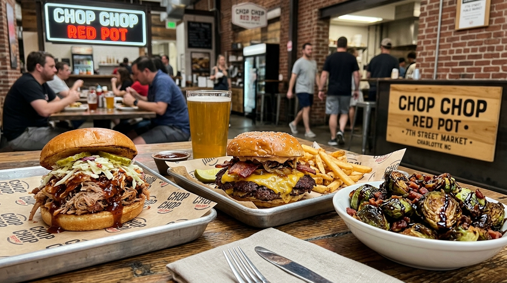

Diner Operating Hours
Monday – Friday: 6:00 AM – 5:00 PM
Saturday: 6:00 AM – 3:00 PM
Sunday: Closed
Serving early breakfast from 6:00 AM & meat-and-three steam table lunch daily.
Visit Niki's Food Shop at 2200 Beatties Ford Rd in Charlotte. View operating hours, phone contact, cash-preferred policy, and directions below.

Monday – Friday: 6:00 AM – 5:00 PM
Saturday: 6:00 AM – 3:00 PM
Sunday: Closed
Serving early breakfast from 6:00 AM & meat-and-three steam table lunch daily.
Niki's Food Shop
2200 Beatties Ford Rd
Charlotte, NC 28216
Phone: (704) 398-2638
Located in Historic West End Charlotte. Dedicated customer parking lot available on site.
Cash-Preferred Institution: Niki's operates primarily on cash transactions. An ATM is located conveniently in our lobby.
Family Reunion & Church Pans: Large half-pan and full-pan orders of fried chicken, mac & cheese, and collard greens available by calling in advance.